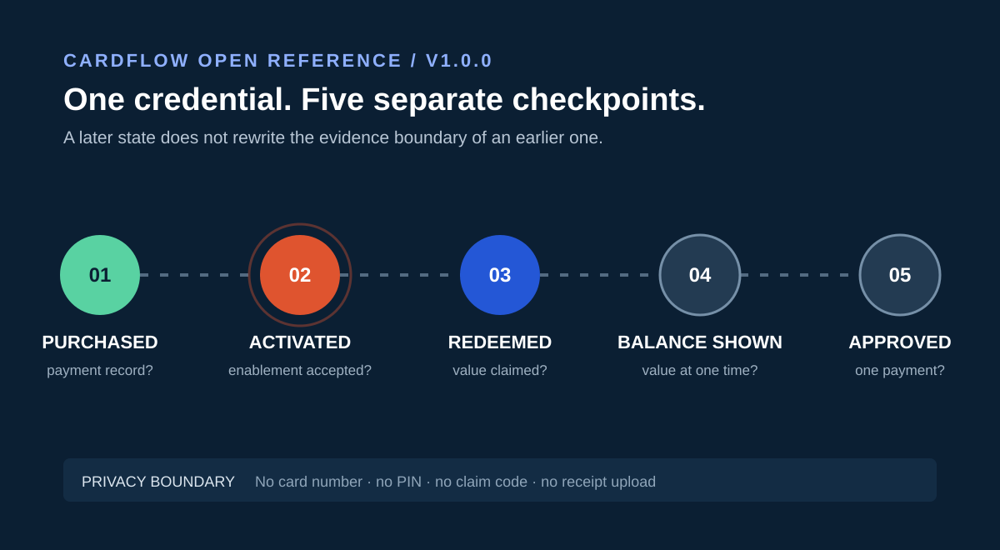

id + position
Stable keys preserve the order of the simplified lifecycle.
Open reference · version 1.0.0
A small, issuer-neutral dataset for researchers, writers and developers who need to distinguish purchase, activation, redemption, balance and payment approval without handling a live gift-card credential.

Editorial model The five states are a reasoning framework, not a universal issuer protocol.
Source boundary Every linked source supports only the claim described in the dataset.
Privacy boundary No card number, PIN, claim code, receipt or account credential is accepted.
Machine-readable specification
Each state names its question, evidence boundary, responsible systems and safety note. Source IDs connect individual records to the official references that support them.
id + positionStable keys preserve the order of the simplified lifecycle.
checkpoint + definitionThe exact question answered at this state.
canSupport + cannotProvePositive evidence and explicit limits stay side by side.
primaryOwner + usefulEvidenceNames the system that can verify the state and the records worth keeping.
{
"id": "activated",
"position": 2,
"checkpoint": "Did an enablement checkpoint succeed?",
"canSupport": [
"An activation checkpoint was reached"
],
"cannotProve": [
"Current balance",
"Region compatibility",
"Future transaction approval"
],
"primaryOwner": [
"Retailer",
"Processor",
"Issuer"
]
}Reusable artifacts
Five state records, source registry, version and privacy boundary.
Download data SCHEMAJSON Schema 2020-12 with required fields, enums and value constraints.
Open schema SVGAccessible 1200 × 660 vector artwork for source-linked explainers.
Download image CFFVersioned project metadata for reference managers and repositories.
Download citationSuggested citation
Attribution is required by the data license. A backlink is welcome but is not required as a condition for unrelated use, ranking or promotion.
CardFlow Editorial Team (2026). CardFlow Gift Card Activation Lifecycle Dataset (Version 1.0.0). https://miuuyy2-bit.github.io/cardflow-activation-lifecycle/reference.html
Reuse notes
Source register
Apple Support, Google Play Help and the CFPB source were rechecked on 31 August 2026. Mastercard was last checked on 16 August 2026.
Read the human-readable source notes in the lifecycle guide or inspect the complete source registry in the JSON dataset.
{kind=link}